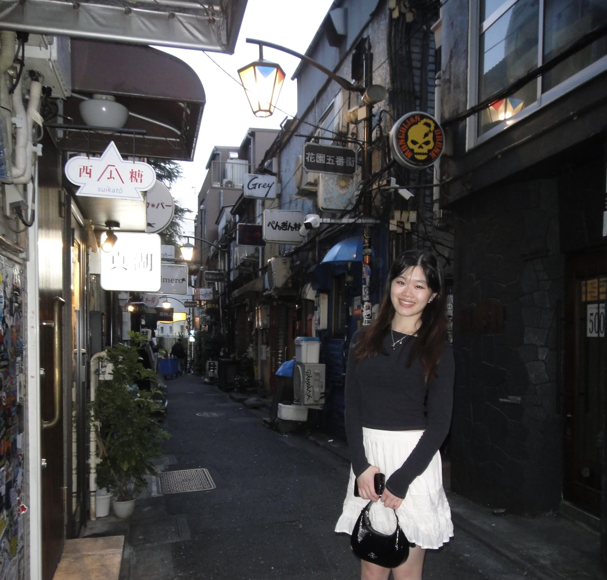

I'm a multidisciplinary builder and creative thinker based in the Bay Area,
currently studying Data Science and Industrial Engineering at UC Berkeley.
From leading engineering teams and launching sustainability initiatives to
modeling NBA games and exploring neural networks, I thrive at the intersection
of user insight, technical depth, creative design, and business strategy.
I'm passionate about crafting meaningful, human-centered experiences— whether
through intuitive design, systems thinking, or storytelling with data.
Outside of class, you'll find me DJing, editing travel vlogs from Japan, or
dreaming up the next quirky side project.
Python • ML • SQL • Tableau
Building predictive models, analyzing complex datasets, and creating data-driven insights for strategic decision making.
Strategy • Client Consulting • Agile
Leading cross-functional teams, conducting market research, and delivering strategic solutions for clients like Baidu, Dropbox, and Product RED.
Figma • Adobe Suite • Prototyping
Creating intuitive user experiences through wireframing, prototyping, and user research. From Spotify redesigns to client branding projects.
Dance • Photography • Videography
Choreographing performances, capturing moments through the lens, and telling visual stories through dance and film.
CAD • 3D Modeling • Systems Design
Designing ergonomic solutions, creating 3D models in SolidWorks, and applying human factors principles to real-world problems.
Interested in working together or want to chat? Reach out!